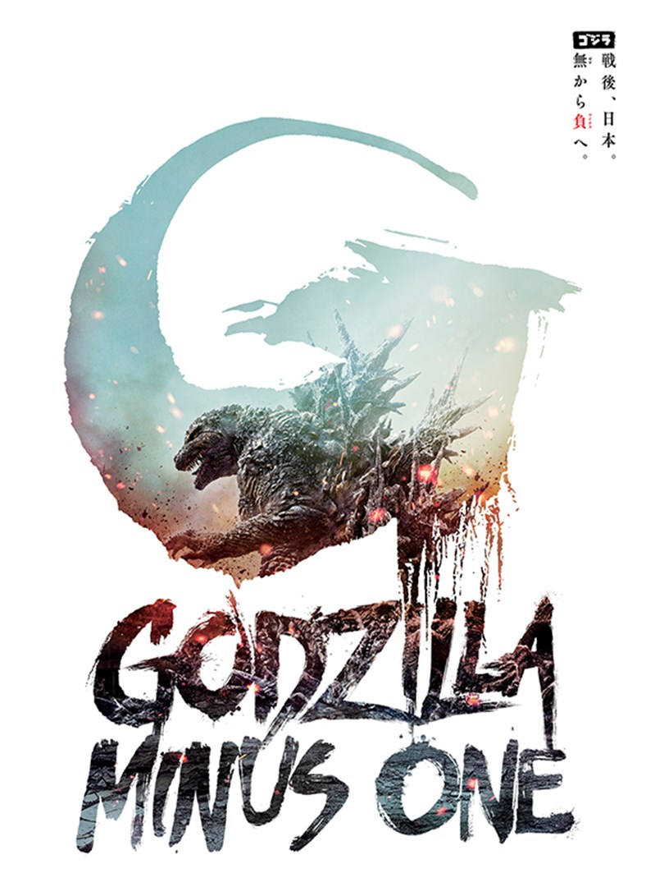
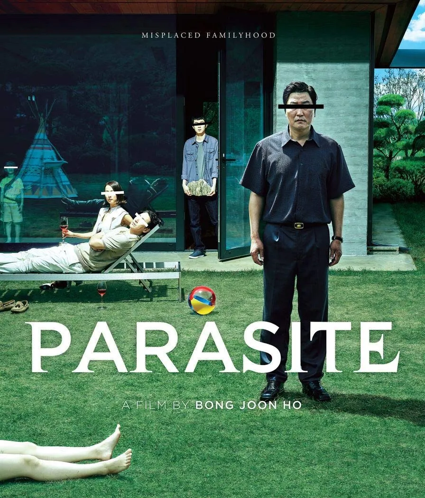
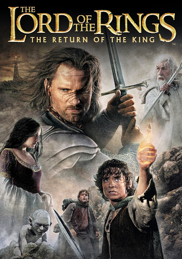

Top 5 Movies of All Time
Here are my top 5 movies of all time, each with a description of why they made the list and what makes them special:
1. Godzilla Minus One
Directed by Takashi Yamazaki, stands out as one of the greatest monster films of all time due to its masterful blend of human drama, historical depth, and breathtaking spectacle. Set in post-World War II Japan, the film uses the backdrop of a nation struggling to rebuild from the ashes of war to deliver a deeply emotional and resonant story. Godzilla is more than a monster here—it serves as a terrifying force of nature and a potent metaphor for the atomic bomb’s devastation, reflecting the scars left on Japan and humanity at large. Combined with stunning visual effects, a gripping narrative, and a focus on the resilience of human spirit, “Godzilla Minus One” transcends its genre, becoming a profound and haunting exploration of survival, loss, and hope.
2. The Batman

Matt Reeves’ The Batman (2022) is a cinematic triumph that redefines the superhero genre through its gritty realism, nuanced storytelling, and a deeply layered portrayal of its iconic protagonist. Set in a grim, rain-soaked Gotham City, the film emphasizes Bruce Wayne’s detective skills, immersing the audience in a noir-inspired mystery as Batman unravels a web of corruption tied to the Riddler’s chilling crimes. Robert Pattinson delivers a brooding, vulnerable performance, capturing a younger Batman still grappling with his dual identity and moral complexities. With its atmospheric cinematography, haunting score by Michael Giacchino, and a grounded yet intense approach to action, The Batman stands out as an introspective and thought-provoking take on the Dark Knight, cementing itself as one of the greatest superhero films of its time.
3. Parasite
Bong Joon-ho’s Parasite (2019) is a groundbreaking masterpiece that transcends genres to deliver a searing critique of class inequality with unmatched storytelling and visual artistry. The film follows the intertwining lives of the wealthy Park family and the impoverished Kim family, exposing the societal divisions and moral compromises that arise from their relationship. Seamlessly blending dark comedy, suspense, and tragedy, Parasite captivates audiences with its unpredictable twists and meticulous pacing. Bong’s direction, paired with striking cinematography and a richly symbolic set design, underscores the physical and emotional barriers between the classes. By peeling back layers of its characters’ lives, Parasite crafts a universal tale of ambition, deception, and desperation, culminating in a powerful and haunting finale. Its historic Best Picture win at the Oscars underscores its status as one of the greatest films of modern cinema.
4. Spirited Away

Hayao Miyazaki’s Spirited Away is a timeless masterpiece that combines breathtaking animation, imaginative world-building, and a deeply heartfelt coming-of-age story. The film follows Chihiro, a young girl who stumbles into a mystical realm populated by spirits and gods, where she must navigate a magical bathhouse to save her parents and find her way home. Miyazaki’s storytelling weaves themes of identity, resilience, and environmental harmony, resonating with audiences of all ages. Studio Ghibli’s hand-drawn animation brings the fantastical world to life with vibrant detail and mesmerizing beauty, while Joe Hisaishi’s hauntingly beautiful score enhances every emotional beat. Balancing whimsy with profound emotional depth, Spirited Away transcends cultural boundaries, becoming a landmark in animation and one of the greatest films ever made.
5. Lord of The Rings The Return of the King
Peter Jackson’s The Lord of the Rings: The Return of the King is an epic cinematic achievement that delivers a breathtaking conclusion to one of the most beloved trilogies in film history. Adapted from J.R.R. Tolkien’s monumental work, the film masterfully weaves together multiple storylines, from Frodo and Sam’s harrowing journey to destroy the One Ring in the fires of Mount Doom, to Aragorn’s rise as the rightful king of Gondor. With its sweeping battles, including the awe-inspiring Siege of Minas Tirith, and moments of profound emotional resonance, the film captures the timeless themes of courage, friendship, and sacrifice. Jackson’s visionary direction, combined with Howard Shore’s iconic score, stunning visual effects, and an unforgettable ensemble cast, elevates the story to unparalleled heights. Winning 11 Academy Awards, including Best Picture, The Return of the King remains a defining moment in cinematic history and a gold standard for epic fantasy storytelling.